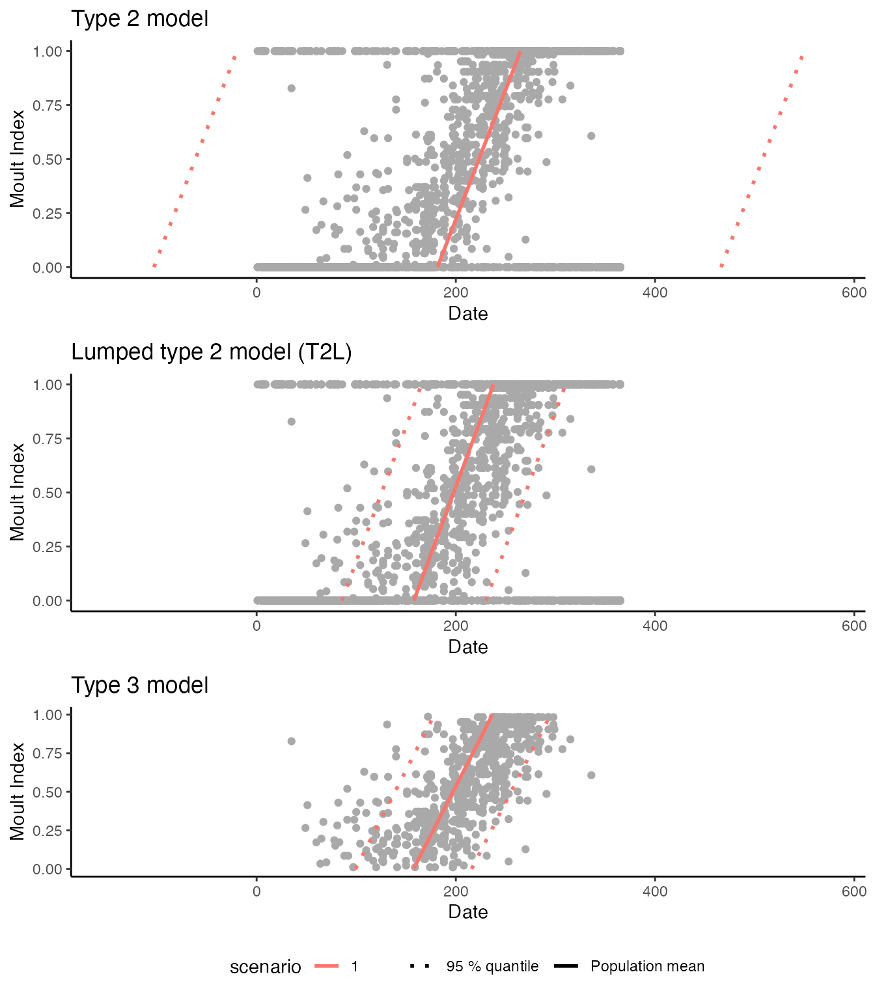
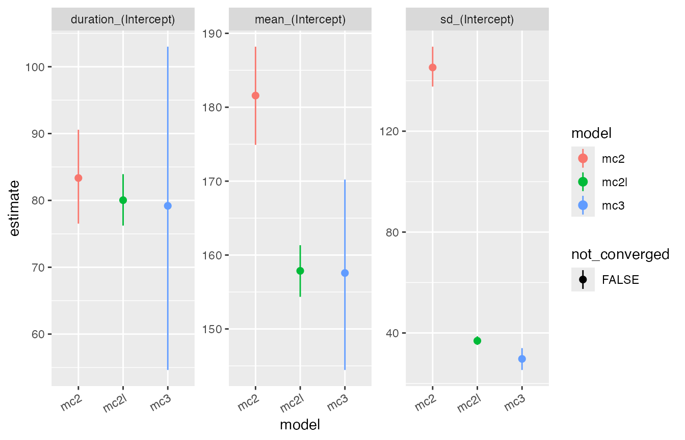
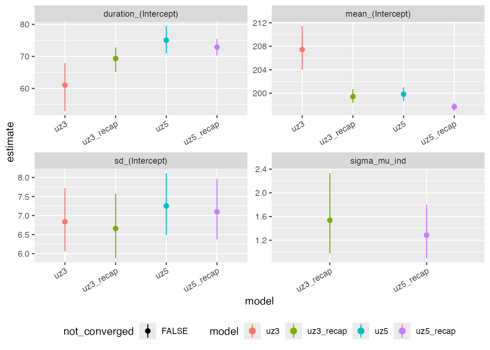
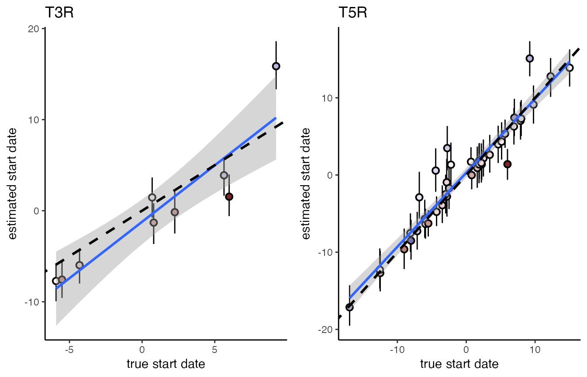

Extended moult models
extended-moult-models.RmdTo install moultmcmc please follow the instructions in the README file.
Lumped models
The gradual transition from new to old plumage between successive moults can make the assignment of non-moulting birds to pre-moult and post-moult categories ambiguous. This classification problem can be sidestepped by distinguishing only two categories of birds: moulting and non-moulting birds, which is implemented in the so called “lumped” moult models in moultmcmc.
The following example demonstrates the use of the lumped type 2 moult model. It is based on a dataset originally supplied with the moult package (Erni et al. 2013) on Southern Masked Weavers (Ploceus velatus), all caught in the Western Cape province of South Africa (Oschadleus 2005). For convenience the data set is provided with processed moult scores in moultmcmc as weavers_processed.
data(weavers_processed)
weavers_processed <- filter(weavers_processed, Year %in% 1993:2003)
ggplot(weavers_processed, aes(x=day, y =pfmg)) +
geom_point() + theme_classic() +
ylab('PFMG') + xlab('Days since 01 August')We then fit both standard and lumped type 2 moult models to this dataset. The lumped model can be activated by setting the option lump_non_moult = TRUE.
mc2 <- moultmcmc('pfmg',
'day',
data=weavers_processed,
chains = 2, cores = 2)
mc2l <- moultmcmc('pfmg',
'day',
data=weavers_processed,
lump_non_moult = TRUE,
chains = 2, cores = 2)We also fit a type 3 model to these data, following the recommendation in Erni et al. (2013). This model type only uses active moult records, and therefore is unaffected by misclassification in the non-moulting birds.
mc3 <- moultmcmc('pfmg',
'day',
data=weavers_processed,
type = 3,
chains = 2, cores=2)
cowplot::plot_grid(
moult_plot(mc2) + theme(legend.position='none') +
xlim(-150,575) + ggtitle('Type 2 model'),
moult_plot(mc2l) + theme(legend.position='none') +
xlim(-150,575) + ggtitle('Lumped type 2 model (T2L)'),
moult_plot(mc3) + theme(legend.position='bottom') +
xlim(-150,575) + ggtitle('Type 3 model'),
nrow=3
)
The moult plots make it clear that the standard type 2 model estimates an unrealistically large standard deviation of the start date, implying that the moult period for the population exceeds a calendar year. In contrast both the lumped type 2 model and the type 3 model give plausible estimates, in that both sets of estimates are consistent with published moult parameters for this species (Oschadleus 2005). However, the lumped type 2 model offers much higher nominal precision, as apparent from the model comparison plot.
compare_plot(mc3,mc2,mc2l) + theme(axis.text.x = element_text(angle = 30, vjust = 1, hjust=1))
Repeated measures moult models
When the assumption of even sampling among and within moult categories is violated, the standard moult model can converge at biologically non-sensible results.
This problem can be greatly reduced when information about the pace of moult from within-season recaptures of individuals is explicitly incorporated into to the parameter estimation using the model.
The repeated measures model is currently implemented for data types 2, 3 and 5 in the moultmcmc function. The repeated measures model is selected by supplying the optional argument id_column which designates within season recaptures, typically formed of a combination of ring number and season.
We demonstrate this here using simulated data which is biased towards records of birds in the early stages of moult, based on a citizen science dataset of moult scores from Eurasian Siskins (Spinus spinus) (Insley, Beck, and Boersch-Supan (n.d.)).
![Frequency distribution of moult records with respect to moult progress for actively moulting Eurasian Siskins [@insley2022moult] sampled in a sub-urban garden in Scotland (left) and seasonal progression of observed moult scores from the same dataset (right). Lines connect repeated observations of the same individuals.](extended-moult-models_files/figure-html/siskin-hist-1.png)
Frequency distribution of moult records with respect to moult progress for actively moulting Eurasian Siskins (Insley, Beck, and Boersch-Supan, n.d.) sampled in a sub-urban garden in Scotland (left) and seasonal progression of observed moult scores from the same dataset (right). Lines connect repeated observations of the same individuals.
The standard models are fitted by not specifying the id_column input argument (which implies id_column = NULL):
and the repeated measures models by passing the information about bird identities to the moultmcmc() function:
#fit the equivalent recapture models
uz3_recap <- moultmcmc(moult_column = 'pfmg',
date_column = 'yday',
id_column = 'hexid',
start_formula = ~1,
duration_formula = ~1,
type = 3,
log_lik = FALSE,
data=siskins,
iter = 1000,
chain = 2,
cores = 2)
max(rowSums(get_elapsed_time(uz3_recap$stanfit)))
#> [1] 102.864
#
uz5_recap <- moultmcmc('pfmg',
'yday',
'hexid',
start_formula = ~1,
duration_formula = ~1,
type = 5,
log_lik = FALSE,
data=siskins,
iter = 1000,
chain = 2,
cores = 2)
max(rowSums(get_elapsed_time(uz5_recap$stanfit)))
#> [1] 3.807When comparing the results visually it is apparent that the moult period for the population predicted by the standard Type 3 models fails to encapsulate a substantial proportion of the observed data, whereas this is not the case for the repeated measures model. The bias in Type 5 model estimates is less severe.
#> Warning: Using `size` aesthetic for lines was deprecated in ggplot2 3.4.0.
#> ℹ Please use `linewidth` instead.
#> Warning: Removed 1 rows containing missing values (`geom_point()`).
#> Removed 1 rows containing missing values (`geom_point()`).
Standard type 3 and 5 moult models fitted to the Siskin dataset without considering within-season recaptures converge at biased parameter estimates (red lines and polygons). When recapture information is included in the model, the resulting fits (green lines and polygons) better encapsulate the observed data.
compare_plot(uz3,uz3_recap,uz5,uz5_recap) + theme(axis.text.x = element_text(angle = 30, vjust = 1, hjust=1), legend.position = 'bottom')
As these are simulated data we can also assess how well the recapture model estimates individual start dates, by extracting the random intercept estimates with the ranef() method and comparing them to the simulated data.
ints <- ranef(uz3_recap) %>%
as_tibble(rownames = 'hexid') %>%
left_join(siskins) %>%
group_by(id) %>%
summarise(est_start = unique(mean),
lci_start = unique(`2.5%`),
uci_start = unique(`97.5%`),
true_start = unique(start_date),
true_dur = unique(duration),
n_total = n(),
n_active = sum(pfmg != 0))
#> Joining, by = "hexid"
t3r_intercepts <- ggplot(ints,
aes(x = true_start - 196.83,
y = est_start,
ymin = lci_start,
ymax = uci_start,
fill = true_dur - 77.8)) +
geom_pointrange(pch = 21) +
scale_fill_gradient2() +
theme_classic() +
stat_smooth(method = 'lm') +
ggtitle('T3R') +
geom_abline(intercept = 0, slope = 1, lwd = 1, lty =2) +
ylab('estimated start date') +
xlab('true start date')
confint(lm(est_start ~ I(true_start - 196.83), data = ints))
#> 2.5 % 97.5 %
#> (Intercept) -3.6512665 1.228751
#> I(true_start - 196.83) 0.7615629 1.700839
ints <- ranef(uz5_recap) %>%
as_tibble(rownames = 'hexid') %>%
left_join(siskins) %>%
group_by(id) %>%
summarise(est_start = unique(mean),
lci_start = unique(`2.5%`),
uci_start = unique(`97.5%`),
true_start = unique(start_date),
true_dur = unique(duration),
n_total = n(),
n_active = sum(pfmg != 0))
#> Joining, by = "hexid"
t5r_intercepts <- ggplot(ints,
aes(x = true_start - 196.83,
y = est_start,
ymin = lci_start,
ymax = uci_start,
fill = true_dur - 77.8)) +
geom_pointrange(pch = 21) +
scale_fill_gradient2() +
theme_classic() +
stat_smooth(method = 'lm') +
ggtitle('T5R') +
geom_abline(intercept = 0, slope = 1, lwd = 1, lty =2) +
ylab('estimated start date') +
xlab('true start date')
confint(lm(est_start ~ I(true_start - 196.83), data = ints))
#> 2.5 % 97.5 %
#> (Intercept) -0.3362297 0.9051314
#> I(true_start - 196.83) 0.8724174 1.0485303
cowplot::plot_grid(t3r_intercepts + theme(legend.position = 'none'),
t5r_intercepts + theme(legend.position = 'none'))
#> `geom_smooth()` using formula = 'y ~ x'
#> Warning: The following aesthetics were dropped during statistical transformation: fill
#> ℹ This can happen when ggplot fails to infer the correct grouping structure in
#> the data.
#> ℹ Did you forget to specify a `group` aesthetic or to convert a numerical
#> variable into a factor?
#> `geom_smooth()` using formula = 'y ~ x'
#> Warning: The following aesthetics were dropped during statistical transformation: fill
#> ℹ This can happen when ggplot fails to infer the correct grouping structure in
#> the data.
#> ℹ Did you forget to specify a `group` aesthetic or to convert a numerical
#> variable into a factor?
#TODO: I think the function now returns the internal index of the random effects vector but matches that to the global index of individuals?!We find that agreement between simulations and estimates is good, even though the model does not explicitly account for heterogeneity in individual moult durations. For both models a regression of estimated versus true start dates has an intercept indistinguishable form 0 and a slope indistinguishable from 1.
Mixed moult records
moultmcmc also allows to fit a mixture of categorical and continuous moult records, by combining the relevant likelihoods from the type 1 and type 2 models, as originally suggested in Underhill and Zucchini (1988). This, so-called Type 12 model can be employed to boost sample sizes and/or allow better balancing of moult and non-moult records (Bonnevie 2010) when multiple types of records are available.
We can simulate such a dataset by splitting the sanderlings dataset into two, and degrading the moult scores in one subsample to moult categories
sanderlings <- moult::sanderlings
sanderlings$MCat[sanderlings$MIndex == 0] <- 1
sanderlings$MCat[sanderlings$MIndex == 1] <- 3
sanderlings$MCat[is.na(sanderlings$MCat)] <- 2
#introduce a couple of NAs
set.seed(1234)
sanderlings$keep_score <- sample(c(0,1), size = nrow(sanderlings), replace = TRUE)
sanderlings_scores <- subset(sanderlings, keep_score==1)
sanderlings_cat <- subset(sanderlings, keep_score==0)
sanderlings_cat$MCat[sanderlings_cat$MIndex == 0] <- 1
sanderlings_cat$MCat[sanderlings_cat$MIndex == 1] <- 3
sanderlings_cat$MCat[sanderlings_cat$MIndex != 1 & sanderlings_cat$MIndex != 0] <- 2
sanderlings_cat$MIndex <- NULL
cowplot::plot_grid(
ggplot(sanderlings_scores, aes(x = Day, y = MIndex)) + geom_point() + theme_classic(),
ggplot(sanderlings_cat, aes(x = Day, y = MCat)) + geom_point() + theme_classic()
)The two datasets can then be pieced together again, and the function consolidate_moult_records is used to consolidate and recode moult score and moult category data.
sanderlings_combined <- bind_rows(sanderlings_scores, sanderlings_cat)
sanderlings_combined$MIndexCat <- consolidate_moult_records(sanderlings_combined$MIndex, sanderlings_combined$MCat)We can then fit Type 1 and Type 2 models to each of the split datasets, as well as the Type 12 model for the recombined dataset, and for reference a Type 2 model to the original data.
fit_scores <- moultmcmc(moult_column = "MIndex",
date_column = "Day",
data = sanderlings_scores,
type = 2,
log_lik = FALSE,
chains = 1)
fit_cat <- moultmcmc(moult_column = "MCat",
date_column = "Day",
data = sanderlings_cat,
type = 1,
log_lik = FALSE,
chains = 1)
fit_combined = moultmcmc(moult_column = "MIndexCat",
date_column = "Day",
data = sanderlings_combined,
type = 12,
log_lik = FALSE,
chains = 1)
fit_original = moultmcmc(moult_column = "MIndex",
date_column = "Day",
data = sanderlings,
type = 2,
log_lik = FALSE,
chains = 1)
compare_plot(fit_scores, fit_cat, fit_combined, fit_original) + theme(axis.text.x = element_text(angle = 30, vjust = 1, hjust=1))The estimates from the combined model (T12) are closer to the estimates from the original dataset, than estimates from either partial dataset.
References
Bonnevie, Bo T. 2010. “Balancing Moult Data by Subsampling Non-Moulting Birds Prior to Regression Analysis.” Ostrich 81 (3): 265–68.
Erni, Birgit, Bo T. Bonnevie, Hans-Dieter Oschadleus, Res Altwegg, and Les G. Underhill. 2013. “Moult: An R Package to Analyze Moult in Birds.” Journal of Statistical Software 52. https://doi.org/10.18637/jss.v052.i08.
Insley, Hugh, Samantha Beck, and Philipp Boersch-Supan. n.d. “Breeding and moult phenology of siskins in the Scottish Highlands.”
Oschadleus, Hans-Dieter. 2005. “Patterns of Primary Moult in the Weavers, Ploceidae.” PhD thesis, University of Cape Town.
Underhill, Les G., and Walter Zucchini. 1988. “A Model for Avian Primary Moult.” Ibis 130: 358–72. https://doi.org/10.1111/j.1474-919x.1988.tb00993.x.